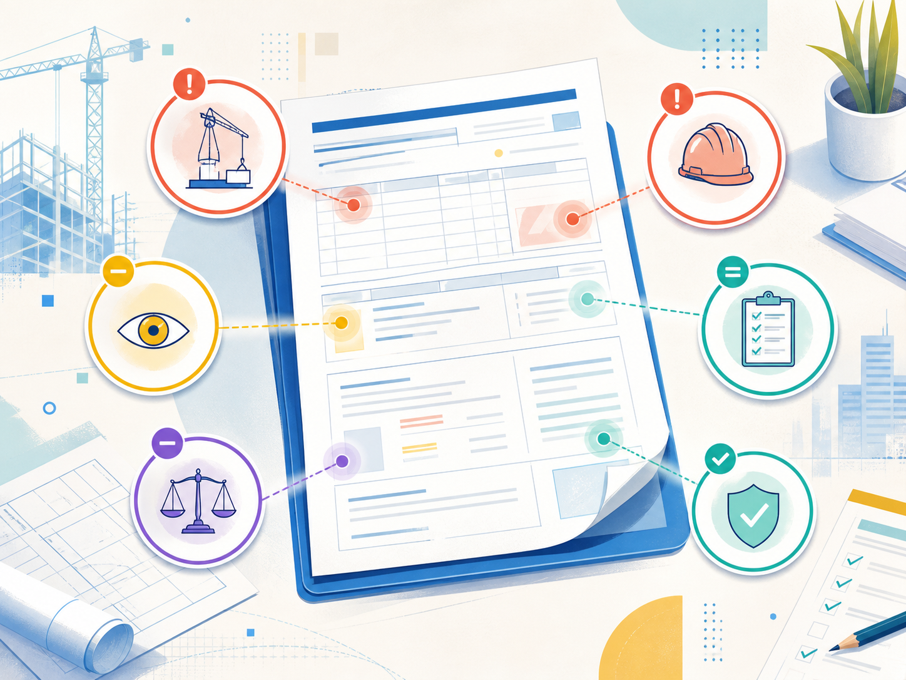
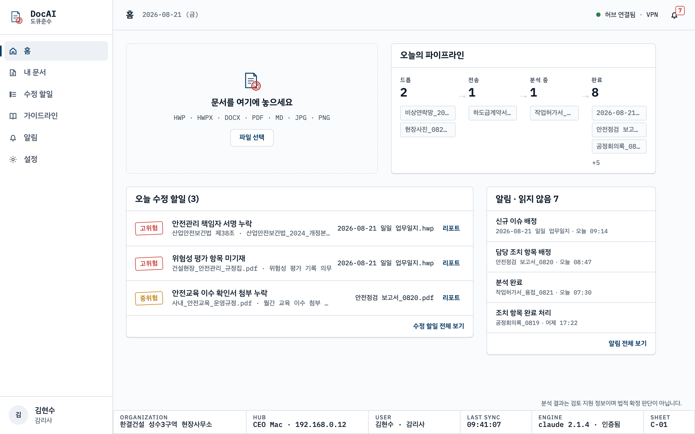
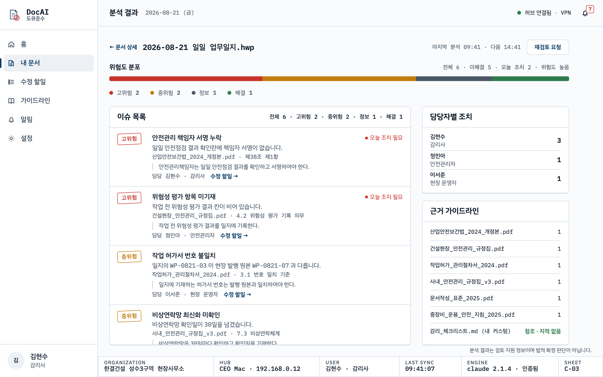

안전관리 책임자 서명 누락
산업안전보건법_2024_개정본.pdf · 제38조 제1항
김현수 · 감리사일지·보고서·허가서를 놓으면 법률과 회사 규정집에 대조해 위반 가능성과 오늘 할 일을 담당자에게 보냅니다.

법률 · 회사 규정집 · 작업허가 절차서 · 문서작성 표준을 한 번에 대조한 결과입니다.
산업안전보건법_2024_개정본.pdf · 제38조 제1항
김현수 · 감리사건설현장_안전관리_규정집.pdf · 4.2
정민아 · 안전관리자WP-0821-03 ≠ 원본 WP-0821-07
이서준 · 현장 운영자그 밖의 결과: 비상연락망 확인일 30일 초과 · 날짜 표기 형식 · 장비 점검표 첨부 확인(09:12 재분석)
직원이 자기 PC의 드롭 폴더에 문서를 놓습니다.
즉시같은 LAN 또는 VPN에서 허브의 직원별 폴더로 복사됩니다.
연결 시법률·회사 규정·조직 및 개인 가이드라인과 대조합니다.
5분 이내근거와 권장 수정이 CEO와 담당 직원 리포트로 정리됩니다.
5시간 주기 재검토문서 · 가이드라인 · 계정
분석 · 알림 · 감사 기록

123파일을 놓는 즉시 허브로 복사됩니다.
드롭 · 전송 · 분석 중 · 완료 상태를 봅니다.
파일명 · 조항 · 참조 문장으로 이유를 확인합니다.

고위험 · 중위험 · 해결 상태와 조직·허브·사용자·마지막 동기화·엔진 연결 상태를 한 화면에 표시합니다.
산업안전보건법 · 건설기술진흥법 · 건설기계관리법 · 소방시설법 개정본
안전관리 규정집 · 작업허가 관리 절차서 · 안전교육 운영규정 · 문서작성 표준
조직 공용 기준과 직원별 감리 체크리스트 · 발주처 지침
PDF · HWP · HWPX · DOCX · MD · 스캔 이미지
1시간 안에 조항 · 항 · 호 단위로 정리
파일명 · 조항 · 참조 문장이 결과에 연결
원본은 허브 Mac에만 보관되며 바뀌지 않습니다. 개정본을 올리면 다음 분석부터 새 기준이 적용됩니다.
문서 원본 사본 · 가이드라인
계정 · 리포트 · 감사 기록
분석 프롬프트만 전송
씨엠닉스가 운영하는 서버 없이 고객사가 지정한 Mac 한 대를 허브로 사용합니다.
본인 문서 · 본인 커스텀 · 본인 리포트만 보고, 개인 기준은 다른 직원 분석에 쓰이지 않습니다.
문서·가이드라인·권한의 변경과 모든 CLI 분석 호출에 수행자와 시각이 남습니다.
분석 시 문서 본문과 가이드라인 발췌가 LLM 벤더 API로 전송되며 벤더의 API 데이터 정책이 적용됩니다. 분석 결과는 검토 지원 정보이며 법적 확정 판단이 아닙니다. 최종 판단은 담당자가 합니다.
허브 Mac에 DocASI를 설치하고 터미널 CLI에 로그인합니다. 직원 PC에는 클라이언트를 연결합니다.
법률·회사 규정집·조직 가이드라인을 넣고 역할과 직원별 폴더를 지정합니다.
직원이 문서를 놓기 시작합니다. 첫 리포트는 5분 안에 도착합니다.
규제 리스크에서 탈피, 업무현장의 가치를 보존하세요
데모를 신청하시면 귀사의 실제 일지 한 부와 규정집으로 현장에서 첫 리포트를 시연합니다.
devfirm.co → 문의 페이지에 회사명 · 현장 · 문서 종류를 적어 주세요.